Our History
1967년 신한화구의 창립은 대한민국 미술인들에게 희망과 설레임을 안겨주었습니다.
-
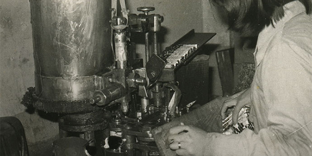
1960s
흑백의 역사로부터 시작된 담대한 여정
1950년 발발한 한국 전쟁은 대한민국의 수도인 서울을 흑백의 도시로 변화시켰습니다. 전쟁으로 인해 어둡게 변해버린
풍경을 밝고 아름다운 컬러로 다시 채색하고 대한민국의 미술 문화 번영을 위한 진지하고 담대한 여정을 시작했습니다.
-
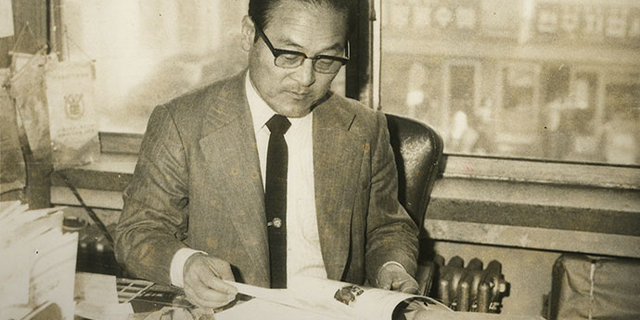
개척을 위한 첫 번째 행보
대한민국은 한국 전쟁으로 많은 어려움을 겪었습니다. 산업을 위한 기반 시설 부재와 기술 부족으로
미술 분야의 물감을 자체적으로 생산하지 못해 당시 많은 학생들과 아티스트들이 미술 교육과 그림
을 그리기 위해서 비싼 수입품에 의존해야 했습니다. 당시 미술 재료 수입 판매 회사를 운영하고 있
던 한복린 선대 회장은 이런 현실을 항상 마음 아파했습니다. 우리의 기술로 직접 만든 고품질의 물
감을 학생들과 아티스트들이 걱정 없이 사용할 수 있도록 해야겠다는 일념 하나로 1967년 6월 1일 ㈜
신한화구의 전신인 한일양행이 창립되었습니다. 우리보다 앞서 있던 해외 미술재료 기업과의 제
휴를 통해 기술을 습득하며 이를 기반으로 독자적인 제품 개발과 제조를 위한 연구를 시작했습니다.
-
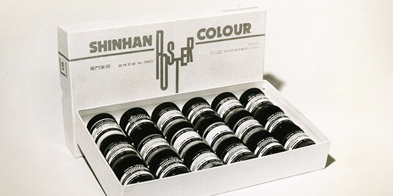
1970s
국민 물감, 신한 전문가 포스터컬러의 시작
독자 기술로 미술용 물감을 내놓겠다는 신념과 기술자들의 피나는 노력 끝에 1973년 신한 전문가 포스터컬러가 세상에
공개되었습니다. 오늘날 신한화구의 포스터컬러는 대한민국 국민이라면 누구나 한 번쯤 사용 경험이 있는 바이블 같은
존재가 되었고 지금도 그 명성은 지속되고 있습니다.
-
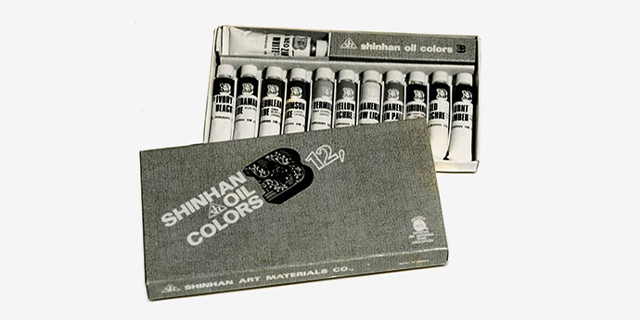
전문가를 위한 유화 개발
당시 대한민국의 아티스트들이 높은 품질의 유화를 쉽게 구할 수 없고 수입 제품에 의존해야 하는
상황을 변화시키고 자 1978년 신한화구는 아트스트들이 만족하고 좋은 그림을 그릴 수 있는 전문가
등급의 유화 물감 개발에 성공했고 정식으로 출시했습니다.
-
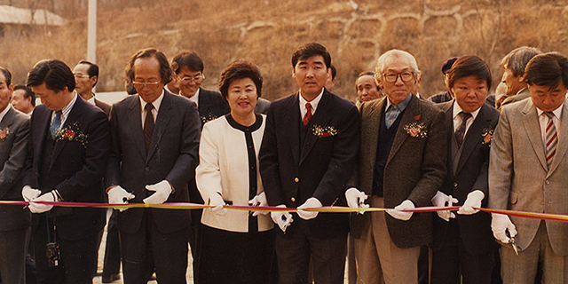
1980s
전통과 과학이 조화된 대규모 생산공장 증설
많은 사람들이 신한화구의 포스터컬러와 유화물감을 신뢰하고 사용하면서 높아진 수요와 더 나은 컬러를 안정적으로 생
산하기 위해 전통과 현대적인 공정이 조화된 대규모 생산공장을 증설했습니다. 1980년대 신한화구는 축적된 물감 제조
기술과 노하우로 유화, 아크릴컬러, 수채화, 한국화 등 다양한 물감을 개발하는데 성공하였고 장르별 전문가 제품 라인업을
완성했습니다.
-
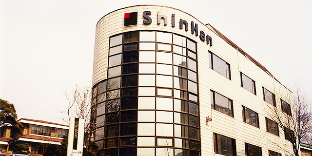
대한민국을 대표하는 예술 기업
신한화구는 컬러를 창조하고 발전된 대한민국을 아름답게 채색하는 과정의 중심에 서있었습니다.
경영자, 연구원, 마케터, 디자이너 등 모든 실무진들이 모여 새로운 컬러 트렌드를 만들어가는 예술
기업, 신한화구의 새로운 사옥이 건립되었습니다.
-
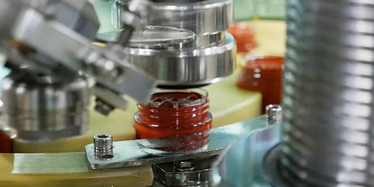
1990s
스스로를 뛰어넘기 위한 생산공장 개선
세계 표준의 품질 기준을 넘어 더 높은 다음 단계의 기준을 세우고 목표에 도달하기 위해 데이터 기반의 과학적이고
현대적인 정밀 설비를 도입했습니다. 빠르게 변화하는 컬러 트렌드와 전 세계의 아티스트들이 요구하는 수요와 품질을
만족하기 위해 신한화구는 그 기준을 스스로 상향시키고 발전시켰습니다.
-
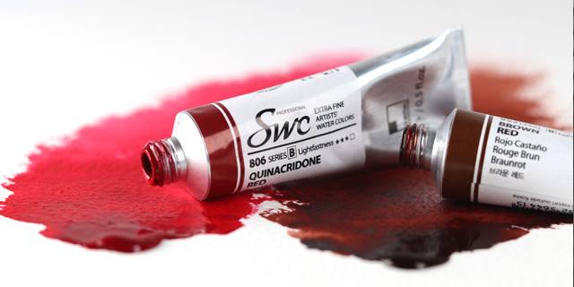
신한 최고급 수채화 SWC 개발 및 출시
독자 기술로 미술용 물감을 내놓겠다는 신념과 기술자들의 피나는 노력 끝에 1973년 신한 전문가 포스터컬러가 세상에
공개되었습니다. 오늘날 신한화구의 포스터컬러는 대한민국 국민이라면 누구나 한 번쯤 사용 경험이 있는 바이블 같은
존재가 되었고 지금도 그 명성은 지속되고 있습니다.
-
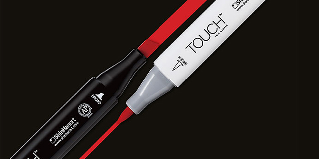
1970s
국민 물감, 신한 전문가 포스터컬러의 시작
내광성, 투명도, 발색 등 수채화 물감이 갖춰야 할 모든 평가 기준과 조건에서 최상위를 기록하는
최고급 수채화 개발 프로젝트를 수립했습니다. 신한화구 색채 연구소는 60년대부터 축적된 기술
데이터와 노하우를 비롯해 아티스트들과의 협업을 통해 실제 경험으로부터 얻은 피드백을 바탕
으로 연구와 개발을 진행했습니다. 마침내 1996년 신한 최고급 전문가 수채화 SWC가 세상에
공개되었습니다.
-
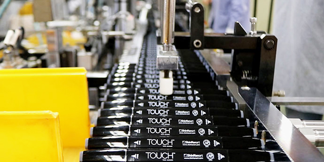
더 완벽한 제품을 위한 TOUCH 브랜드 전용 공장
대량 생산에 의해 발생할 수 있는 품질 오차를 최소화하며 제품의 균일하고 일정한 수율 유지를 위해
정밀 설비를 보강하고 추가했습니다. 더불어 자동화 설비와 함께 더 엄격한 품질 관리 공정을 도입했
습니다. 국제 표준보다 높은 자체 품질 기준 목표를 설정하고 더 완벽한 터치 마카를 제공하기 위한
수십 가지의 평가 조건을 마련해 한층 더 발전된 공정으로 운영을 시작했습니다.
-
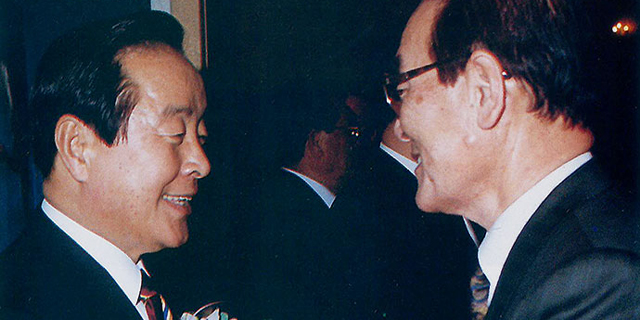
대한민국 정부가 인증하는 예술 기업
대규모 R&D 투자, 지속적인 기술 개발 및 확보, 적극적인 인재 양성, 세계 60개국 제품 수출 성과 등의 공로를 대한민국
정부에서 인정하여 대통령이 주관하는 지식경제부 장관 표창을 수상했습니다. 신한화구는 대한민국의 역사와 발전
과정을 함께한 예술 기업으로 인정받았습니다.
-
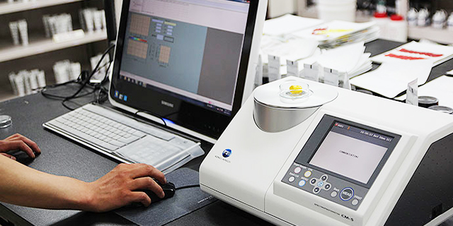
2000s
지속적인 공정 개선으로 더 높은 품질과 컬러 증색
신한화구는 컬러 제조와 생산에 있어 전통적인 방식과 과학적이고 현대적인 공정의 조화를 위해 항상
노력 해왔습니다. 기존의 방식에 안주하지 않으며 시대적인 요구와 변화하는 트렌드, 전 세계
아티스트들의 피드 백을 빠르게 대응하기 위한 공정 개선과 정밀 설비 도입, 각 분야 연구 인력 확충을
진행했습니다. 그 결과 신한 최고급 전문가 수채화 SWC 104색, 신한 전문가 유화 109색, 신한 전문가
아크릴컬러 61색, 터치 트윈 마카 204색 등 기존 컬러의 품질 개선을 비롯해 새로운 컬러를 추가하며
모든 제품 라인업의 완성도를 높였습니다.
-
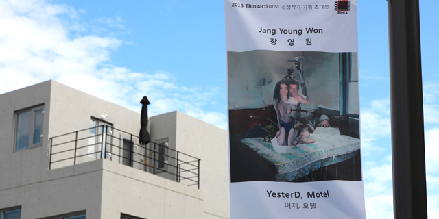
2010s
컬러 제조를 넘어 미술 문화 저변 확대를 위한 노력
신한화구는 대한민국 No.1 전문가 미술재료 제조 기업으로써 그 책임과 의무를 다 하고 있습니다. 단순히 컬러 연구와
제조, 생산, 판매를 넘어 실질적인 미술 문화의 번성과 저변 확대를 위해 노력하고 있습니다. 매년 많은 예산과 비용을
투자하여 미술 인재 발굴 목적의 전 세계 유, 초, 중, 고등학생을 대상으로 한 신한그림엽서공모전을 개최하고 있으며
신진작가 지원을 위한 Thinkartkorea 프로그램을 운영하며 실력 있고 가능성이 높은 젊은 작가들을 지속적으로 후원
하고 있습니다.
-
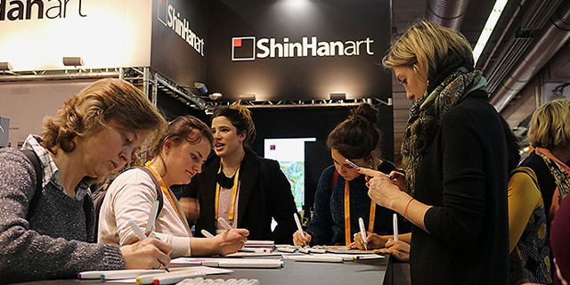
2020s
새로운 시대, 더 나은 컬러를 위한 움직임
모든 것이 열악한 1960년대 후반 미술재료라는 극히 한정된 분야와 시장에서 신한화구의 창립은 당시
대한민국의 모든 미술인들에게 희망을 안겨주었습니다. 모든 임직원들은 창립 이후부터 항상
시대적인 책임감과 대한민국의 문화, 예술, 그리고 미술 분야를 대표하는 일원이라는 자부심으로
더 나은 미술재료를 만들어내기 위해 노력을 기울여왔습니다. 신한화구의 이러한 움직임은 대한
민국을 넘어 전 세계 아티스트들을 대상으로 지금도 멈춤 없이 계속되고 있습니다.